print working directory
pwd_ command
This command will simply show you the current folder you're working in.
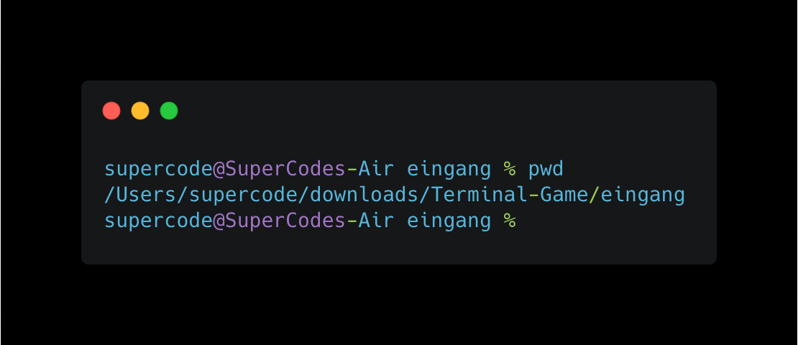This command will simply show you the current folder you're working in.
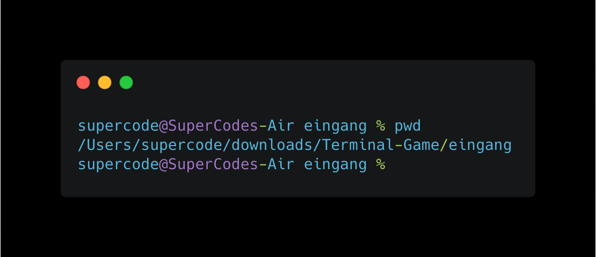Use this command after navigating into a directory using the cd command to view the contents (files and directories) inside of the current directory. Use the argument -l (ls -l) to get even more information about each of the files, including the permissions, owner and date created.
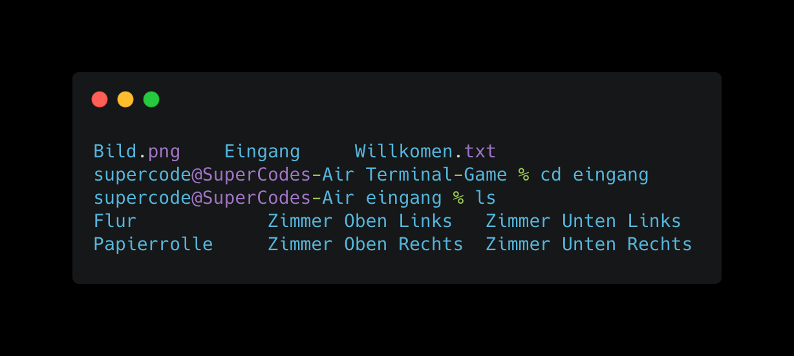Use this command after navigating into a directory using the cd command to view the hidden contents (files and directories) inside of the current directory as well.
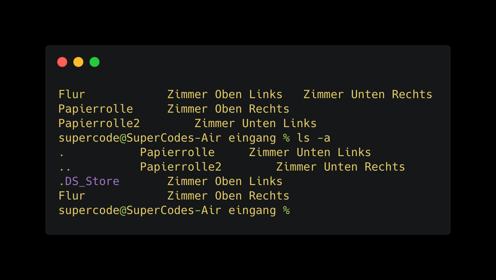This command will change the directory that you're currently working with in the Terminal in order to execute other commands on a different directory, view the contents of a different directory or open a file in a different directory. This is a very common command that will be used when working with the CLI. If you ever lose your place and which directory you're in, type pwd (print working directory) and press Return to echo the current path.
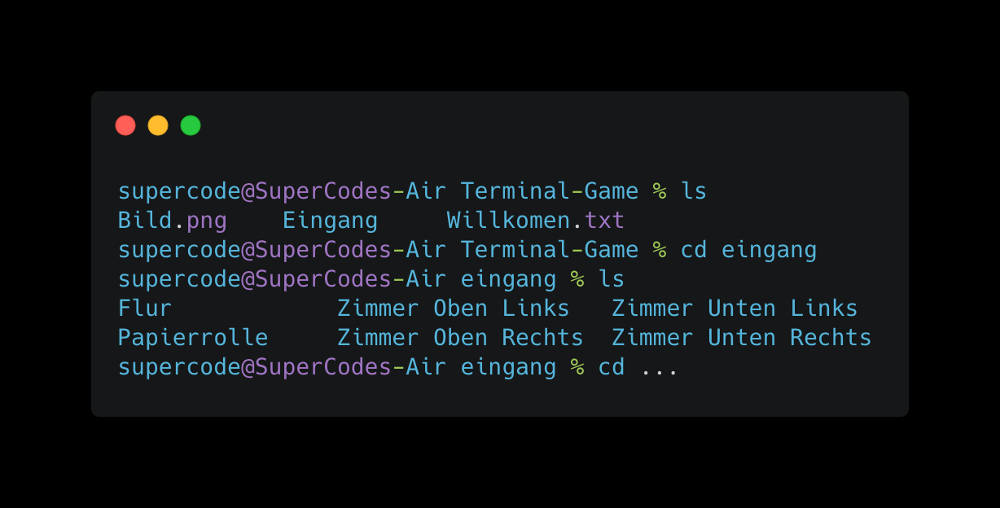When browsing a directory, you may encounter a file that you wish to open. That's where the cat command comes in. Typing this command followed by a space and the filename will open the file.
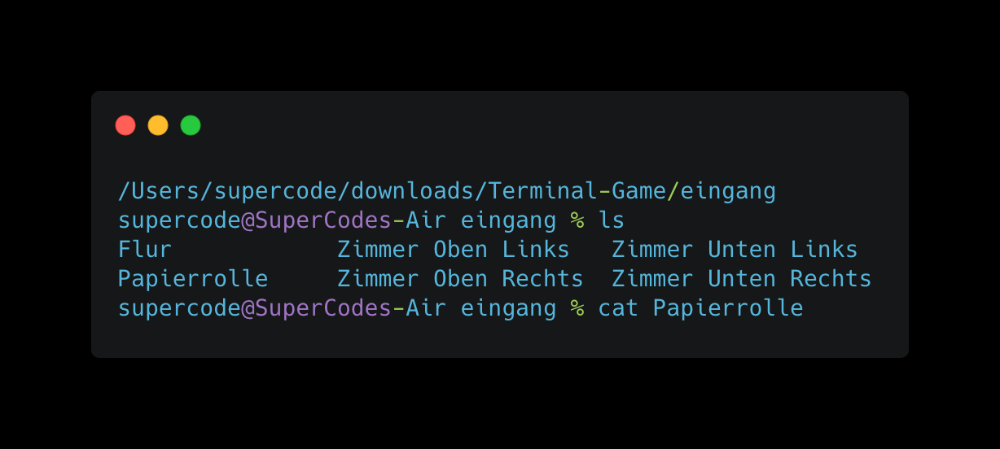When browsing a directory and you want to go back to the previous directory you can use the cd .. comand. You can also combine it with a /.. to go back even further.
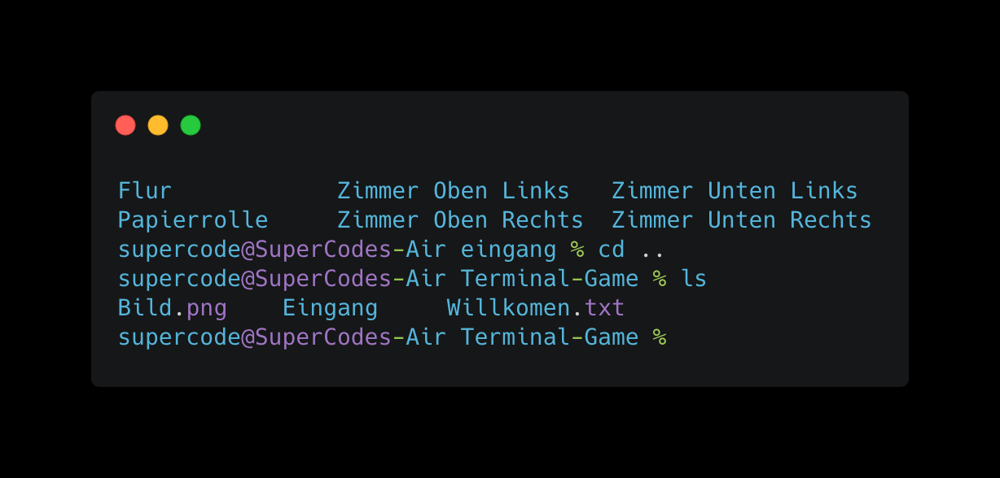This command facilitates copying a file from one location to another, or just simply making a copy of the same file with a new name. When specifying the first argument, include the originating file that you wish to copy followed by a space and a full path, filename and extension of where you want the copy to be placed when the command is executed. The Terminal will return when the copy has been completed.
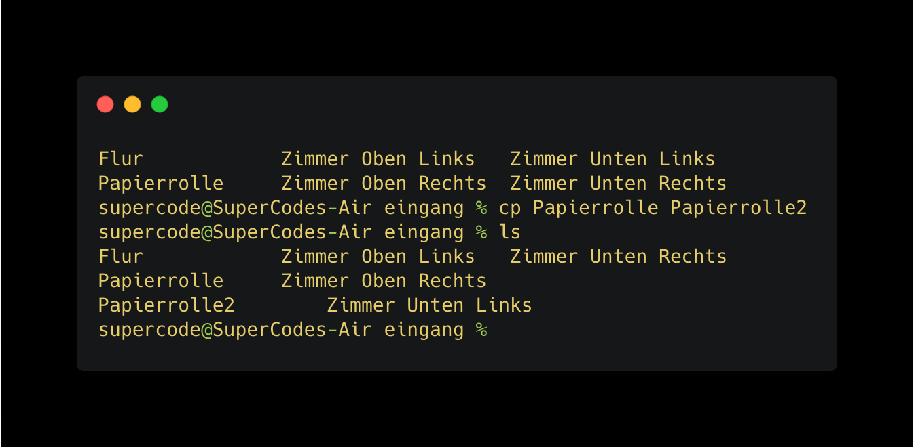When you don't want to copy a file, but instead move it, use the same format of the cp command, but instead replace 'cp' with 'mv'. This will perform a file move from one location to another, removing the file from the original location and putting it into the new location.
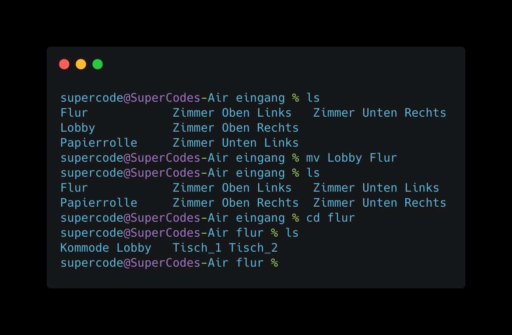The touch command allows you to create any type of file, but it's blank. After you create the blank file, you can open it in a text editor by typing open [filename].
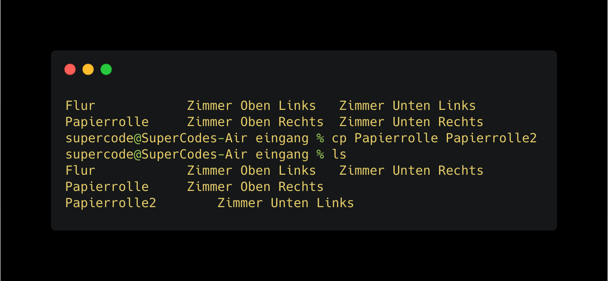This command will allow you to create a directory (folder) right from the CLI. When you need a place to store new files, just use this command to add a new directory in the current working directory, or specify a full path to the location where you want the new directory to be placed.
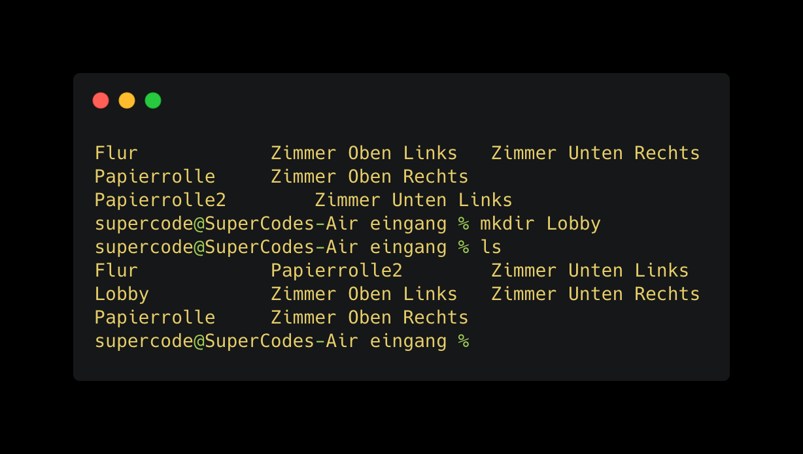When you've created a folder that has the wrong name, you can easily use the mv command to rename it, or if you want to remove a directory altogether, use the rmdir command followed by the path to the directory.
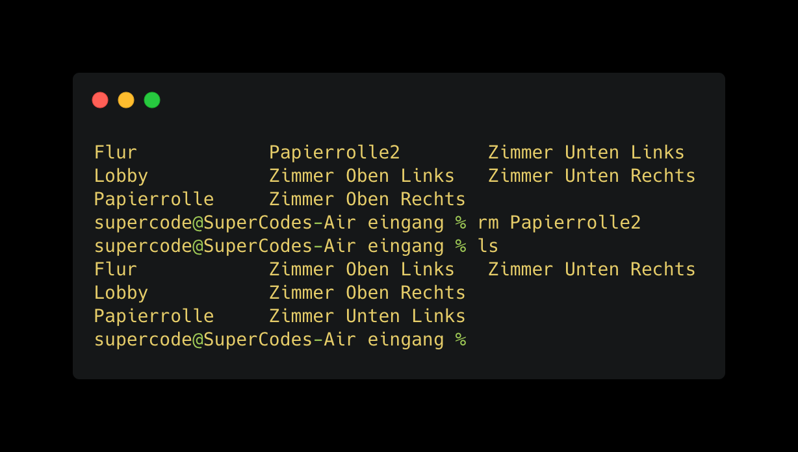